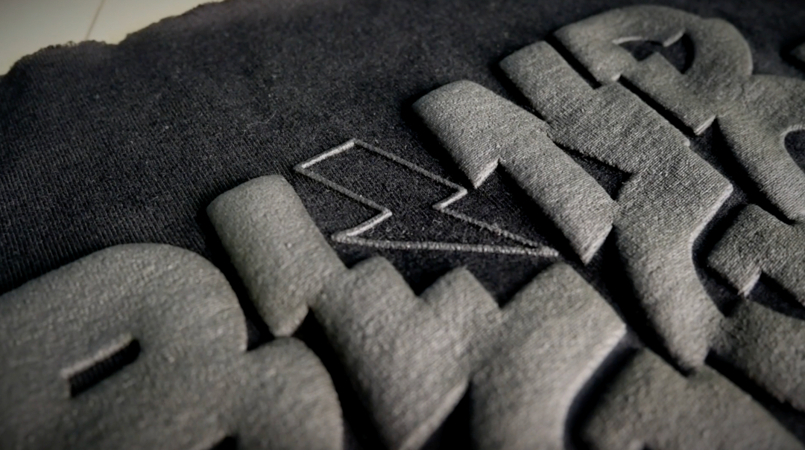

Fading Technology
Fading technology is a printing method that allows for a gradual transition from one color to another. This is achieved by using a special type of ink that is designed to fade at a specific rate. The ink is applied to the fabric using a screen printing process, and the resulting design has a soft, gradient-like effect.
Puff Print
Puff print is a type of screen printing that uses a special type of ink that puffs up when heated. This creates a raised, three-dimensional effect on the fabric. Puff print is often used to create designs that require a lot of texture and depth, such as logos or graphics with intricate details.
Combining Fading Technology and Puff Print
By combining fading technology and puff print, designers can create complex and visually striking designs that incorporate both gradient-like effects and raised textures. This allows for a wide range of creative possibilities and can result in truly unique and eye-catching designs.